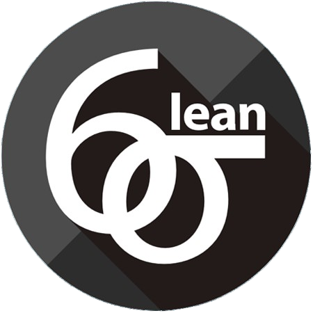

Value Stream Map (Coordenador de Projetos)
Voltar
Solicitação Inicial
Análise da Arquitetura
da Solução
Inserção nas Sprints
de Suporte
Gestão de Equipamentos
Montagem e Testes
Confirmação de Detalhes
Monitoramento e
Follow-ups
Gestão de Faturamento
Fechar